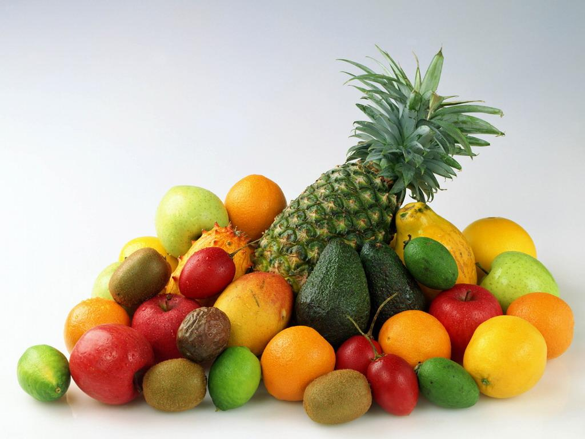

水果泥评测
针对 已统计的样本，简单总结下：
-
艾拉的厨房（6款）：全部添加了 浓缩果汁。
-
果乐士（3款）：无香精，无色素，无浓缩果汁。
-
亨氏（5款）：全部添加了 食用香精和 浓缩果汁 ，部分添加了食用葡萄糖。
-
小皮（10款）：部分添加了 浓缩果汁。
Ella's Kitchen | 艾拉的厨房
1、白色混合果泥
条形码：5060107335929
配料表：香蕉，苹果，菠萝，椰汁， 浓缩柠檬汁。
2、橙色混合果泥
条形码：5060107332850
配料表：苹果，芒果，香蕉，椰汁， 浓缩柠檬汁。
3、粉色混合果泥
条形码：5060107335837
配料表：苹果，香蕉，樱桃，树莓， 浓缩柠檬汁。
4、黄色混合果泥
条形码：5060107330030
配料表：香蕉，苹果，芒果，杏， 浓缩柠檬汁。
5、绿色混合果泥
条形码：5060107330412
配料表：苹果，香蕉，梨，奇异果， 浓缩柠檬汁。
6、紫色混合果泥
条形码：5060107330139
配料表：香蕉，苹果，黑醋栗，蓝莓， 浓缩柠檬汁。
果乐士
1、可吸果泥：苹果
条形码：6926659203685
配料表：苹果99.9%，维生素C 0.1%。
2、可吸果泥：苹果·蓝莓·草莓·黑加仑
条形码：6925659203722
配料表：水果 99.9%（苹果，蓝莓，草莓，黑加仑），维生素C 0.1%。
3、可吸果泥：苹果·芒果·西番莲
条形码：6925659203715
配料表：水果 99.9%（苹果，芒果，西番莲），维生素C 01.%。
Henz | 亨氏
1、苹果草莓燕麦果汁泥
条形码：6921956607102
配料表：水， 浓缩苹果汁（15%），草莓（10%），纯燕麦片（≥4%），苹果浆（苹果，维生素C）， 浓缩柠檬汁， 食用香精。
2、苹果黑加仑燕麦果汁泥
条形码：6921956607126
配料表：水， 浓缩苹果汁（14%），苹果浆（苹果，维生素C），纯燕麦片（≥4%）， 浓缩黑加仑汁（0.4%）， 浓缩柠檬汁， 食用香精。
3、苹果蓝莓果汁泥
条形码：6921956656117
配料表：苹果浆（77%），水， 浓缩苹果汁，蓝莓（4%）， 食用葡萄糖， 浓缩柠檬汁， 食用香精。
4、苹果香橙果汁泥
条形码：6921956656056
配料表：苹果浆（苹果，维生素C）（78%），水， 浓缩苹果汁， 食用葡萄糖， 浓缩橙汁（1.5%）， 浓缩柠檬汁， 食用香精。
5、苹果香蕉果汁泥
条形码：6921956656070
配料表：苹果浆（苹果，维生素）（66%），香蕉浆（15%），水， 浓缩苹果汁， 食用葡萄糖， 浓缩柠檬汁， 食用香精。
Little Freddie | 小皮
1、谷物发酵乳香蕉果酱
条形码：5060403110589
配料表：香蕉，风味发酵乳（生牛乳，保加利亚乳杆菌，动物双歧杆菌，嗜热链球菌），燕麦，大麦， 浓缩柠檬汁<0.1%。
2、谷物蓝莓草莓香蕉泥
条形码：5060403110077
配料表：香蕉，草莓，蓝莓，燕麦，糙米。
3、胡萝卜苹果泥
条形码：5060403110015
配料表：苹果，胡萝卜， 浓缩柠檬汁<0.1%。
4、黑莓椰子草莓香蕉苹果泥
条形码：5060403111371
配料表：苹果，香蕉，草莓，椰子汁，黑莓。
5、树莓香蕉苹果桃泥
条形码：5060403111395
配料表：桃，苹果，香蕉，树莓。
6、香蕉草莓苹果泥
条形码：5060403110053
配料表：苹果，草莓，香蕉。
7、香蕉猕猴桃梨苹果泥
条形码：5060403110022
配料表：苹果，梨，猕猴桃，香蕉。
8、西梅苹果泥
条形码：5060403110008
配料表：苹果，西梅。
9、燕麦香蕉苹果泥
条形码：5060403110060
配料表：苹果，香蕉，燕麦， 浓缩柠檬汁<0.1%。
10、椰子菠萝香蕉苹果泥
条形码：5060403111388
配料表：苹果，香蕉，椰子汁，大米粉， 浓缩柠檬汁<0.1%。
微信公众号